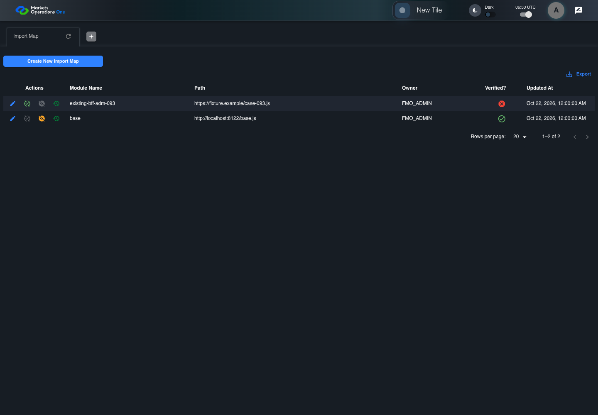
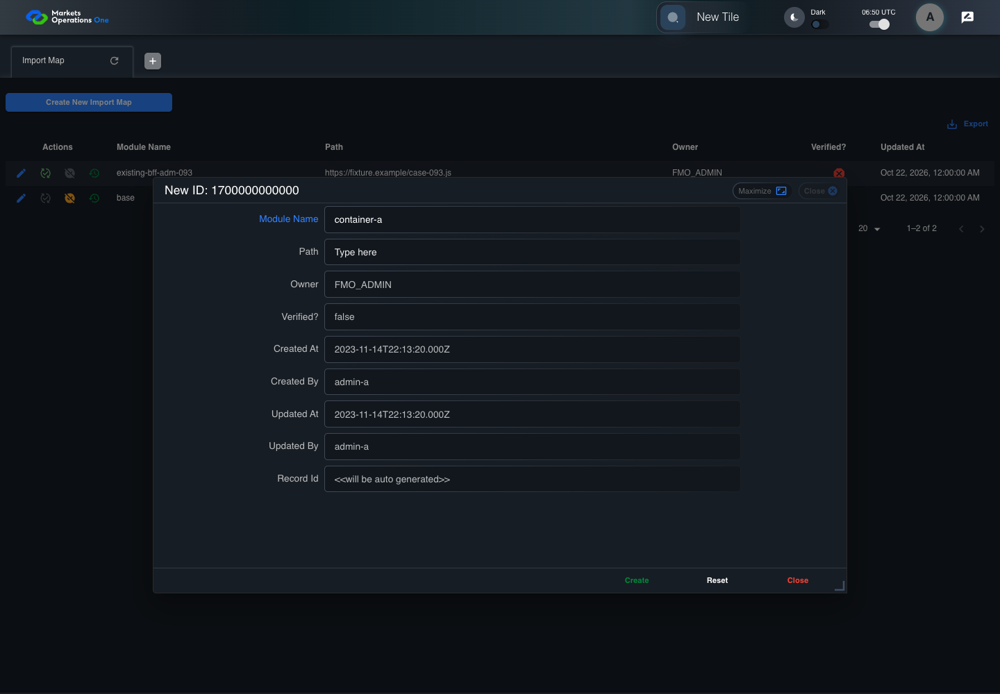
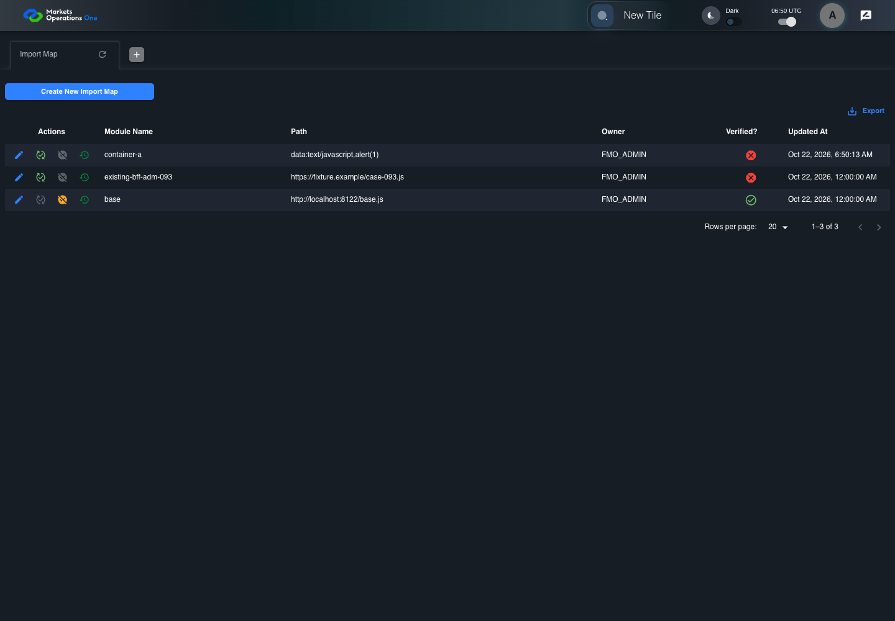

BFF-ADM-093 current BFF administration through actual UI
FAIL · application/run-072/bff-adm-093-current-bff-administration-through-actual-ui-a9c1a740f94a-attempt-1 · ACTUAL_APPLICATION_LOCAL_SERVICES
Actual current React and exact-current BFF admin controllers/services/JPA with actual migration DDL in disposable PostgreSQL. Controlled OUD/EMS2 identities and local Spring bootstrap. Fixture SQL seeds/mutates isolated records; service errors are actual database errors. Undefined agreed messages remain unresolved acceptance.
2026-10-22T06:50:05.909Z to 2026-10-22T06:50:18.949Z
Assertions and result · Artifact manifest · Exact run inputs and source hashes
Result SHA-256:c703d0f98be3f5dde670bd21775d95e1d2e449124c184a4b7f0acc96ef30de08Retained failure details
[
{
"message": "Error: \u001b[2mexpect(\u001b[22m\u001b[31mlocator\u001b[39m\u001b[2m).\u001b[22mtoBeVisible\u001b[2m(\u001b[22m\u001b[2m)\u001b[22m failed\n\nLocator: locator('[role=\"tabpanel\"]:visible').locator('[role=\"dialog\"]').filter({ has: getByText(/^(?:new|edit|verify|deactivate) ID:/) })\nExpected: visible\nTimeout: 5000ms\nError: element(s) not found\n\nCall log:\n\u001b[2m - Expect \"toBeVisible\" locator('[role=\"tabpanel\"]:visible').locator('[role=\"dialog\"]').filter({ has: getByText(/^(?:new|edit|verify|deactivate) ID:/) }) with timeout 5000ms\u001b[22m\n\u001b[2m - waiting for locator('[role=\"tabpanel\"]:visible').locator('[role=\"dialog\"]').filter({ has: getByText(/^(?:new|edit|verify|deactivate) ID:/) })\u001b[22m\n",
"stack": "Error: \u001b[2mexpect(\u001b[22m\u001b[31mlocator\u001b[39m\u001b[2m).\u001b[22mtoBeVisible\u001b[2m(\u001b[22m\u001b[2m)\u001b[22m failed\n\nLocator: locator('[role=\"tabpanel\"]:visible').locator('[role=\"dialog\"]').filter({ has: getByText(/^(?:new|edit|verify|deactivate) ID:/) })\nExpected: visible\nTimeout: 5000ms\nError: element(s) not found\n\nCall log:\n\u001b[2m - Expect \"toBeVisible\" locator('[role=\"tabpanel\"]:visible').locator('[role=\"dialog\"]').filter({ has: getByText(/^(?:new|edit|verify|deactivate) ID:/) }) with timeout 5000ms\u001b[22m\n\u001b[2m - waiting for locator('[role=\"tabpanel\"]:visible').locator('[role=\"dialog\"]').filter({ has: getByText(/^(?:new|edit|verify|deactivate) ID:/) })\u001b[22m\n\n at /Users/lushevol/code/github/ratan-release-impact/workbench/e2e/audit-specs/bff-admin.spec.ts:43:117\n at AuditCapture.step (/Users/lushevol/code/github/ratan-release-impact/workbench/e2e/support/audit-fixture.ts:94:21)\n at /Users/lushevol/code/github/ratan-release-impact/workbench/e2e/audit-specs/bff-admin.spec.ts:18:27",
"location": {
"file": "/Users/lushevol/code/github/ratan-release-impact/workbench/e2e/audit-specs/bff-admin.spec.ts",
"column": 117,
"line": 43
},
"snippet": " 41 | if(text.startsWith('the next BFF repository save')){await app.fixture('seed',{failure:`${app.resource}-save`});return;}\n 42 | if((match=/^Admin [ABCS] clicks the button labeled \"([^\"]+)\"/.exec(text))){if(match[1].startsWith('Create New')){const nativeNow=Date.now();if(creationClock)await page.clock.setFixedTime(new Date(1700000000000));await app.ui.panel.getByRole('button',{name:match[1],exact:true}).click();if(creationClock)await page.clock.setFixedTime(new Date(nativeNow));}else {const row= /row with \"Record Id\" \"(\\d+)\"/.exec(text)?.[1];if(row){await app.ui.reveal('actions',row);await app.ui.action(match[1],row).click();}else await app.clickFooter(match[1]);}return;}\n> 43 | if((match=/^the dialog titled \"([^\"]+)\" (is visible|remains visible)/.exec(text))){await expect(app.ui.dialog()).toBeVisible();await expect(app.ui.dialog()).toContainText(match[1]);return;}\n | ^\n 44 | if((match=/^Admin [ABCS] fills the (?:textbox|textarea) labeled \"([^\"]+)\" with exactly (\\d+) ASCII \"a\" characters/.exec(text))){await app.fill(match[1],'a'.repeat(Number(match[2])));return;}\n 45 | if((match=/^Admin [ABCS] fills the (?:textbox|textarea) labeled \"([^\"]+)\" with \"(.*)\" in dialog/.exec(text))){await app.fill(match[1],match[2].replaceAll('\\\\\"','\"').replaceAll('\\\\t','\\t'));return;}\n 46 | if((match=/^Admin [ABCS] clicks the combobox labeled \"([^\"]+)\"/.exec(text))){await app.ui.field(match[1],'combobox').click();return;}"
}
]Machine observations
- actual-identity-projection.json
5976ef4567d9d325e949fca7bc6fba4c87b98a3025d011ed592f64c62146e023 - baseline-inputs.json
714c22d0282fda3f7554be4e7f27cbc5b094a6901149c0263d06336e491221ae - bff-boundary.json
493b3959e1a2a80efc306340190f4ce0236019b25be5015783c1e57f2321cded - committed-ui-submission-comparisons.json
bc9655c2c3ed9692a7f840578f851193f0c5f009b0feed1b8c62c6fe78d8896e - creation-clock.json
9998704da4f129cb3774e68ca7f6e5bf1a5c9c01612f361643c8ffed44c87207 - fixture-step-4.json
521225b5ab16383ae02bd09492f5356fdf08e5b6ec1937799eaa434abd2f74c2 - fixture-step-5.json
31ba81fb212dc3a1bb0150a472b2721f354d23f0122023a8bf7691a927d86532 - initial-persisted-records.json
8c93e323e2f78c070d3d9999947c356da3296ebeb9f642febbb6107d1b95ce54 - persisted-after-submit.json
f34f477aa8957aa33546f016f3c6f06d267ac4801af0e9e2a38a68cd5a029a5d - ui-origin-bff-requests.json
432f0442cf96fecb2e564b3112909dd77ea487fdcc3822a02379b3b7408f56fc
Screenshot capture: CAPTURED. Named frames: 12.
Step screenshot evidence: INCOMPLETE. 11/13 canonical steps have execution screenshots.
Step 12 has no screenshot from an executed step. Step 13 has no screenshot from an executed step.
Canonical step timeline
Given Admin A uses subject "admin-a" with role "FMO_ADMIN" in an isolated authenticated browser
Execution: PASSED.
1. step-01 Visible state after step 1: Given Admin A uses subject "admin-a" with role "FMO_ADMIN" in an isolated authenticated browser
2026-10-22T06:50:11.311Z · 1440×1000
Step: /Users/lushevol/code/github/ratan-release-impact/workbench/tasks/ui-test-coverage-20261022/test-cases.md:18646
SHA-256:8efd60e6d3b0a6a23877c03eafe48662406c18f018a9b91d7e85608cc3416246And the controlled Import Map fixture records the initial grid rows and persisted values
Execution: PASSED.
2. step-02 Visible state after step 2: And the controlled Import Map fixture records the initial grid rows and persisted values
2026-10-22T06:50:11.501Z · 1440×1000
Step: /Users/lushevol/code/github/ratan-release-impact/workbench/tasks/ui-test-coverage-20261022/test-cases.md:18647
SHA-256:8efd60e6d3b0a6a23877c03eafe48662406c18f018a9b91d7e85608cc3416246And the controlled creation clock returns 1700000000000 milliseconds
Execution: PASSED.
3. step-03 Visible state after step 3: And the controlled creation clock returns 1700000000000 milliseconds
2026-10-22T06:50:11.578Z · 1440×1000
Step: /Users/lushevol/code/github/ratan-release-impact/workbench/tasks/ui-test-coverage-20261022/test-cases.md:18648
SHA-256:8efd60e6d3b0a6a23877c03eafe48662406c18f018a9b91d7e85608cc3416246And the baseline fixture data defines "Module Name" as "container-093"
Execution: PASSED.
4. step-04 Visible state after step 4: And the baseline fixture data defines "Module Name" as "container-093"
2026-10-22T06:50:11.664Z · 1440×1000
Step: /Users/lushevol/code/github/ratan-release-impact/workbench/tasks/ui-test-coverage-20261022/test-cases.md:18649
SHA-256:8efd60e6d3b0a6a23877c03eafe48662406c18f018a9b91d7e85608cc3416246And the baseline fixture data defines "Path" as "https://fixture.example/case-093.js"
Execution: PASSED.
5. step-05 Visible state after step 5: And the baseline fixture data defines "Path" as "https://fixture.example/case-093.js"
2026-10-22T06:50:11.756Z · 1440×1000
Step: /Users/lushevol/code/github/ratan-release-impact/workbench/tasks/ui-test-coverage-20261022/test-cases.md:18650
SHA-256:8efd60e6d3b0a6a23877c03eafe48662406c18f018a9b91d7e85608cc3416246When Admin A clicks the button labeled "Create New Import Map" on the Import Map administration page
Execution: PASSED.6. step-06 Visible state after step 6: When Admin A clicks the button labeled "Create New Import Map" on the Import Map administration page
2026-10-22T06:50:12.078Z · 1440×1000
Step: /Users/lushevol/code/github/ratan-release-impact/workbench/tasks/ui-test-coverage-20261022/test-cases.md:18651
SHA-256:74f82a62417be1a37ec3c328eec8b7013bf48fed5aa4a8dcbf45dbe511647ec5Then the dialog titled "new ID: 1700000000000" is visible on the Import Map administration page
Execution: PASSED.7. step-07 Visible state after step 7: Then the dialog titled "new ID: 1700000000000" is visible on the Import Map administration page
2026-10-22T06:50:12.322Z · 1440×1000
Step: /Users/lushevol/code/github/ratan-release-impact/workbench/tasks/ui-test-coverage-20261022/test-cases.md:18652
SHA-256:14959d75044a495efedccc971c832ef4ba2f53ed9b4c0bb773be610fbe6e4d9fWhen Admin A fills the textbox labeled "Module Name" with "container-a" in dialog "new ID: 1700000000000"
Execution: PASSED.
8. step-08 Visible state after step 8: When Admin A fills the textbox labeled "Module Name" with "container-a" in dialog "new ID: 1700000000000"
2026-10-22T06:50:12.791Z · 1440×1000
Step: /Users/lushevol/code/github/ratan-release-impact/workbench/tasks/ui-test-coverage-20261022/test-cases.md:18653
SHA-256:72e210bdb49df22896e5b318fbd76c6f317c6c967b945992078d55fe165d35d2And Admin A fills the textbox labeled "Path" with "data:text/javascript,alert(1)" in dialog "new ID: 1700000000000"
Execution: PASSED.9. step-09 Visible state after step 9: And Admin A fills the textbox labeled "Path" with "data:text/javascript,alert(1)" in dialog "new ID: 1700000000000"
2026-10-22T06:50:13.219Z · 1440×1000
Step: /Users/lushevol/code/github/ratan-release-impact/workbench/tasks/ui-test-coverage-20261022/test-cases.md:18654
SHA-256:5ce0d3d1fbf53bea6c809b8a0844f59c79e42af398c8a2bd9788ac8bccb8d173And Admin A clicks the button labeled "Create" in dialog "new ID: 1700000000000"
Execution: PASSED.
10. step-10 Visible state after step 10: And Admin A clicks the button labeled "Create" in dialog "new ID: 1700000000000"
2026-10-22T06:50:13.463Z · 1440×1000
Step: /Users/lushevol/code/github/ratan-release-impact/workbench/tasks/ui-test-coverage-20261022/test-cases.md:18655
SHA-256:bc2a59a0d50efdd97cc93a99ff01a836aa421a9b27f8828472bd48ebfd3e6dbfThen the dialog titled "new ID: 1700000000000" remains visible on the Import Map administration page
Execution: FAILED.
11. step-11-failure Visible state when step 11 failed. Later steps did not execute.
2026-10-22T06:50:18.513Z · 1440×1000
Step: /Users/lushevol/code/github/ratan-release-impact/workbench/tasks/ui-test-coverage-20261022/test-cases.md:18656
SHA-256:bc2a59a0d50efdd97cc93a99ff01a836aa421a9b27f8828472bd48ebfd3e6dbfAnd the alert with severity "error" in the portal snackbar displays the agreed message for a Path validation error
Execution: NOT_EXECUTED.No screenshot is recorded for this step. No executed state is claimed.
And the active-import-map response excludes the submitted unsafe Path
Execution: NOT_EXECUTED.No screenshot is recorded for this step. No executed state is claimed.
Additional named frames

The visible state when the test failed.
2026-10-22T06:50:18.576Z · 1440×1000Step: Test source: /Users/lushevol/code/github/ratan-release-impact/workbench/e2e/audit-specs/bff-admin.spec.ts:11
SHA-256:
bc2a59a0d50efdd97cc93a99ff01a836aa421a9b27f8828472bd48ebfd3e6dbfScreenshots establish visible state only. Assertions and traces support functional claims.